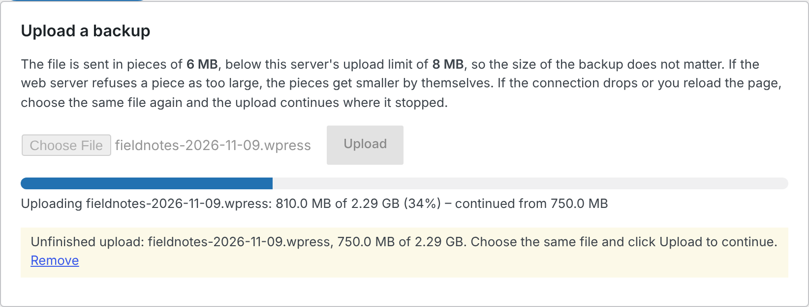

Restorwell quick start
Installing Restorwell and restoring your first .wpress backup. Each zip also has a readme.txt with the answers to common questions. Back to the Restorwell product page.
Install
Requires WordPress 6.5 or later and PHP 7.4 or later (64-bit PHP for backups over 2 GB), on MySQL or MariaDB. Password-protected backups need PHP's OpenSSL extension, and bzip2-compressed backups need bz2.
- Get the zips. Everyone needs the free plugin, restorwell-1.1.2.zip, from this site. Pro buyers also get
restorwell-pro.zipfrom Polar (the link in the purchase e-mail, or Polar's customer portal): two zips from two places. Do not unzip them. - In WordPress, go to Plugins > Add New Plugin, click Upload Plugin, choose the zip, then Install Now and Activate.
- Pro only: do the same with
restorwell-pro.zip, after the free plugin. WordPress refuses to activate Pro without it, and if the free plugin is removed later, Pro shows a notice that says how to fix it. - Go to Tools > Restorwell. Only administrators see it.
Restore a backup
- Choose the backup. Under Upload a backup, choose the .wpress file and click Upload. It is sent in pieces smaller than your host's upload limit; the box says how big. If the connection drops or the page reloads, choose the same file again and click Upload: it continues where it stopped.

The same file chosen again after a reload: it continues from 750 MB. Or skip the upload: copy the file by FTP or your host's File Manager into
wp-content/restorwell-backups, click Refresh list, then Check next to it. Files inwp-content/ai1wm-backupsare listed too. - Read the Check. It starts by itself after an upload. It reads the whole backup, then shows what is inside and each limit on this server. Nothing on the site changes while it runs. For a password-protected backup, type the password and click Check password; it is used only while checking and restoring, and never saved.
![Check: fieldnotes-2026-11-09.wpress, with the source address https://fieldnotes.example.org, WordPress 7.1.4, PHP 8.3.6, 2.29 GB, 820 files, akismet/akismet.php and contact-form-7/wp-contact-form-7.php, twentytwentyfive, gzip, 'Yes: password needed', made with All-in-One WP Migration 7.113; under Limits on this server a red cross 'Password needed' and four ticks; the Backup password field with Check password; 'Restore stays off until every limit marked ✕ is solved. Nothing on your site has changed.'](img/password-needed.png)
A password-protected backup before the password is typed. Restore stays off. - Restore. When every limit is ticked, tick I understand that this replaces this site's database, media, plugins and themes… and click Restore. Keep the page open; the progress line names each step. If it closes, open Tools > Restorwell again to continue or cancel.
- Log in again. The users now come from the backup, so log in with an account from it. Tools > Restorwell then offers to delete the backup file.
What the Check's messages mean
- The backup file is incomplete: it ends early, usually a download or upload that stopped. Copy it again. This is what a "Corrupted File" message elsewhere often means.
- Damaged: a checksum does not match, and the damaged file inside is named. Copy the backup again from where it was made.
- Password needed or wrong: type it again; passwords are case-sensitive.
- Not enough free disk space: the space needed and the space available. Delete old backups or ask your host for more, then check again.
- Database statement size larger than
max_allowed_packet: ask your host to raisemax_allowed_packetto the size the Check gives, then check again. - Newer WordPress or PHP in the backup: named as a warning, with what to do; the restore may go ahead.
- Multisite backup, or a site that does not use MySQL or MariaDB (for example SQLite): not supported, and Restore stays off.
- Backup folder on a different disk:
wp-content/restorwell-backupsis a link to another disk, so restored folders cannot be moved into place. Make it an ordinary folder insidewp-content, move the backup into it, and check again.
If an upload stops with "413 Request Entity Too Large", that is the web server's own limit, which can be lower than the one WordPress shows. Restorwell makes the pieces smaller and carries on, down to 64 KB, and says so. If even that is refused, copy the file by FTP.
Command line (WP-CLI)
wp restorwell list wp restorwell check site.wpress --password-stdin wp restorwell restore site.wpress --password-stdin --yes
A bare name such as site.wpress is looked up in wp-content/restorwell-backups and wp-content/ai1wm-backups; a path is taken as given. check prints the same report as the screen and changes nothing. restore runs the Check, asks for confirmation (skip it with --yes) and restores. --password-stdin asks at a hidden prompt, or reads the first line from a pipe; --password=… also works but shows in the process list. Exit codes: 0 success, 1 other error, 2 password needed or wrong, 3 backup damaged or incomplete, 4 not enough disk space, 5 another limit blocks the restore.
Restorwell Pro: Restore from a link
With Pro active, Tools > Restorwell has a Restore from a link box. Paste the direct download address of a .wpress file and click Download to this server. The server downloads it into wp-content/restorwell-backups with progress, and then the same Check starts. If the connection drops, what arrived is kept and listed under the address field as an unfinished download: click Continue, now or after a reload. A share page that shows a preview (for example a Google Drive viewer page) is not a direct link, and Pro says so. Addresses on private or local networks, and ports other than 80, 443 and 8080, are refused. If an address is refused, the reason appears under the address field.
A server that cannot resume. Some links, often ones served by a script, ignore requests to resume. Pro sees that in the first answer and says so: the whole file then comes in one request on your server, and the progress line shows the bytes as they arrive (you can reload the page; the running download is listed with Show progress). If your host stops that request before the end, nothing can be kept, because such a server cannot continue a download, and Pro says what to do instead: download the backup to your computer and use Upload a backup (it goes in pieces and resumes), or copy it into wp-content/restorwell-backups by FTP.
Which links were tested. Against our own test servers: a direct link to a .wpress file, links that redirect, links with a query string (as presigned storage links have), links without a file name, and servers that cannot resume. Links from Amazon S3, Backblaze, Dropbox or Google Drive themselves have not been tested.
Updating Pro. Pro never checks for updates by itself. Each new version is added to your purchase on Polar at no charge, and the current version numbers are on the product page. Sign in to Polar's customer portal with the e-mail you bought with (Polar sends a one-time code), download the new restorwell-pro.zip, then go to Plugins > Add New Plugin > Upload Plugin, choose it, click Install Now and then Replace current with uploaded. Pro stays active and your backups are not touched. Update the free plugin the same way with restorwell.zip.
Limits
- Restorwell does not make backups, restore multisite networks, or read other backup formats.
- If the host kills a request in the middle of the final switch, the site stays half switched until someone opens Tools > Restorwell or runs
wp restorwell restoreagain; the screen then says what happened, Continue finishes the restore, and Cancel puts the site's own folders back. - Left out of a restore by design:
wp-config.php, server-specific drop-ins such asobject-cache.php, and cache files. Plugins and themes on this site that are not in the backup stay installed. E-mail addresses are not rewritten. - The backup folder blocks web access with .htaccess, web.config and an index file. On nginx, ask your host to deny
wp-content/restorwell-backups, or delete the backup after restoring. - Tested on Linux with WordPress 7.1.4, PHP 8.3.6 and MariaDB 10.11, on Apache 2.4 with mod_php and on PHP's built-in server (behind nginx for the HTTP 413 test), uploads in Chromium. Windows and macOS servers, LiteSpeed, IIS, MySQL and other browsers have not been tested.
Privacy
The free plugin makes no network request at all. Pro downloads only from the address you type and the addresses it redirects to. Neither sends anything to Ochrestack. The backup password is never written to the database, a file or a log.
Support
Email support@ochrestack.com with your WordPress and PHP versions and, if the Check blocked the restore, the lines marked ✕ (or the output of wp restorwell check <file>).